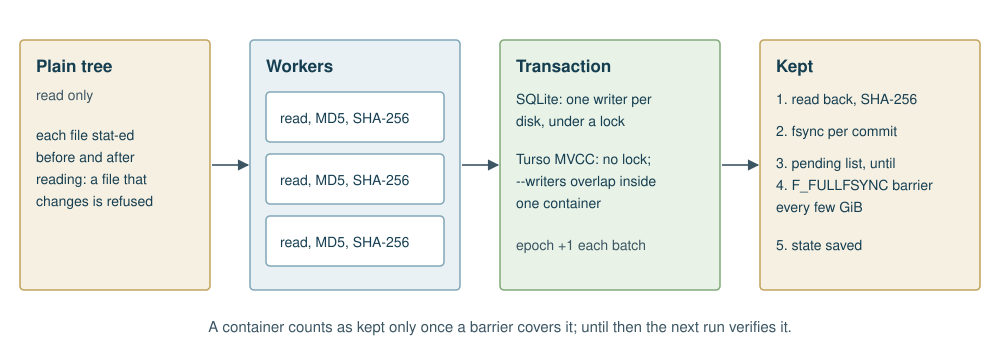

Three different things can run at once, and they are easy to confuse:
--writers, overlap
inside one container. They exist only under Turso MVCC, because SQLite
allows one writer per file.
--mvcc removes the writer lock. Containers are written
side by side, and each commits with BEGIN CONCURRENT.
--writers N splits one container’s bytes into about N
batches, written on N threads in Rust or N domains in OCaml, each with
its own connection. A transaction that loses a conflict rolls back and
runs again.
One row needs care. The epoch would be a conflict between every pair of concurrent transactions: an early test on four writers logged 205 conflicts on the way to 40 commits. So under concurrent writers each batch bumps the epoch in a short transaction of its own, after its data. A crash between the two leaves data committed with the epoch one behind. packdir’s own recovery does not depend on the epoch: the pending list and the file’s identity decide what is checked again.
Measured on 2026-11-01 on an iMac Pro with an Intel Xeon W-2191B, on its internal SSD, with Turso 0.8.3: a synthetic tree of 1.60 GiB in 3,840 incompressible files and 64 containers, packing into an empty directory, averaged over two runs. Each cell is seconds of wall-clock time.
| Mode | OCaml | OxCaml | Rust |
|---|---|---|---|
| SQLite, 1 worker | 18.1 | 18.1 | 19.7 |
| SQLite, 4 workers | 5.8 | 5.7 | 6.6 |
| Turso, 4 workers | 8.9 | 8.5 | 10.6 |
| Turso MVCC, 4 workers | 7.7 | 7.9 | 9.2 |
| Turso MVCC, 1 worker, 4 writers | 18.8 | 19.3 | 25.1 |
| Turso MVCC, 4 workers, 2 writers | 6.8 | 6.7 | 7.9 |
Four things stand out:
So SQLite remains the default. MVCC is worth trying where its strengths apply: a fast disk, one very large container, or several writers that want to be independent, such as long-running services. Unknown: how MVCC behaves on a large tree on a spinning disk. It has not been measured, and the removal of the writer lock may hurt there, since it brings back seeks between containers.
The tier is the same on each language, and it is worth stating exactly:
| SQLite | Turso | Turso MVCC with --writers |
|
|---|---|---|---|
| Rust | Yes | Yes | Threads, each with a connection |
| OxCaml | Yes | Yes | Domains, each with a connection |
| Stock OCaml 5 | Yes | Yes | Domains, each with a connection |
The binding is one C stub, and it releases the runtime lock around
every statement step, so domains run in Turso in parallel. Stock OCaml 5
and OxCaml share it, and every test in this manual passes on both.
Nothing in packdir yet uses OxCaml’s own features, such as its data-race
checks. It builds under OxCaml and benefits from its compiler. OxCaml
marks Domain.spawn with two alerts, recommending its own
threading library, and packdir acknowledges both and caps
--writers at the recommended domain count.
Where only standard SQLite will do, every build has it: a system without a Rust toolchain, a stock OCaml build without the SDK, or a tree that other SQLite tools must also write.
Using packdir as a library inside a larger OCaml program, you may be tempted to fork a worker per container, as the command line does. If the parent holds a large heap, tell the child’s collector to stand down:
Gc.set { (Gc.get ()) with Gc.space_overhead = 1000000 }A forked child inherits the parent’s whole heap, and as it allocates
file contents its major collector marks all of it, for nothing, since
the child lives for one job. In one real run, marking took about four
times the CPU of SHA-256 (a stack sample of a worker, 739 samples
against 179), with a parent of 6.5 GB. In a synthetic test on a 3.7 GiB
heap, that one line cut the child’s CPU from 0.63 s to 0.16 s. Rust has
no such cost, and neither does pack-tree itself, whose
workers fork early from a small heap.